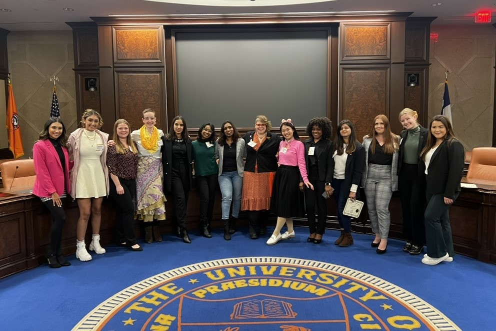
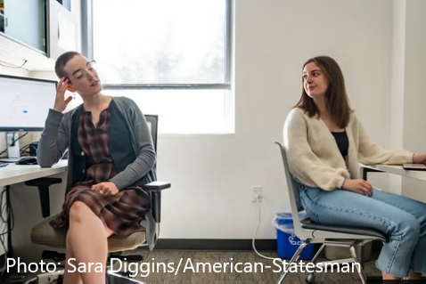
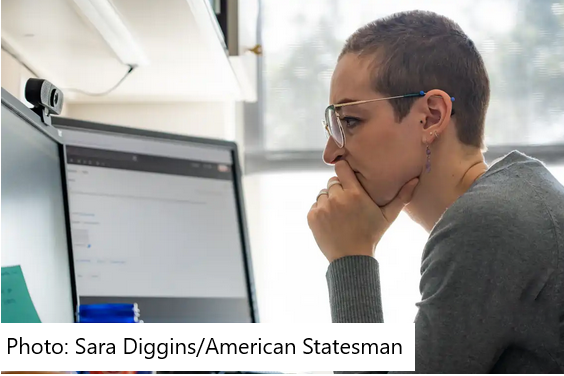
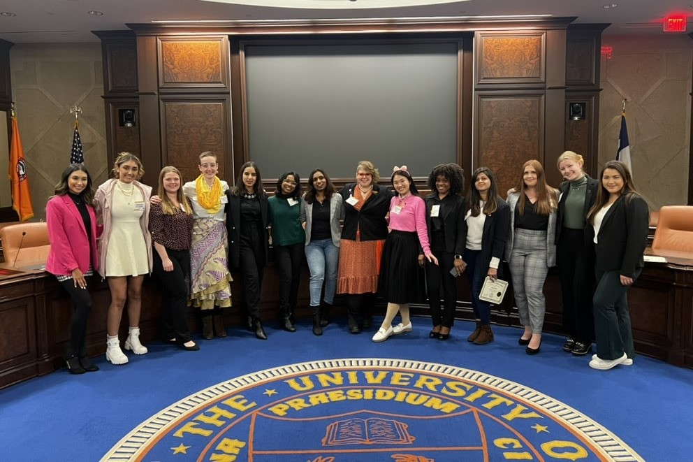
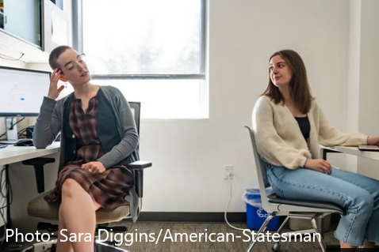
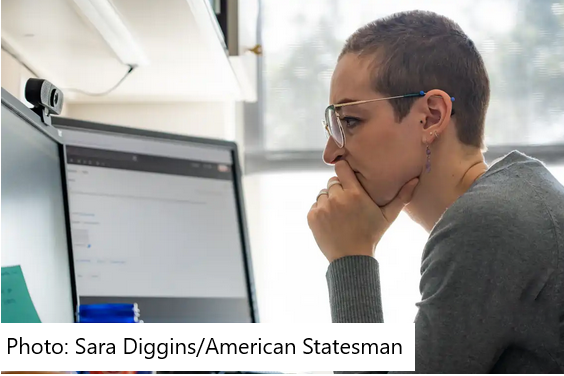

University leadership and service
As president of the UT Austin Graduate Student Assembly, I focused on graduate student labor conditions and facilitating communication with university administrators.
The Graduate Student Assembly (GSA) is UT Austin's student governance organization. I have served four terms as a member of the assembly, culminating with a term as president in 2022-23. As President, I coordinated with my Vice-President to recruit a leadership team and develop a platform. Together we set the agenda for bi-weekly meetings of our leadership team and our Assembly of representatives, which we ran. I also met regularly with other student leaders, university administrators and leaders, and members of the news media. The GSA president also serves on the UT Austin Regent's Student Advisory Council; the Council met for three weekends over the year to develop recommendations from all UT System schools to present to the UT Board of Regents. My job as president required me to serve as a liaison between these various bodies and the GSA: I solicited feedback on upcoming agenda items from the Assembly and relayed updates from meetings to them after the fact.
Our platform focused on graduate student labor conditions and improving communication with university administrators. Over the year, I repeatedly advocated for graduate student labor conditions. I worked with other members of the Graduate Assembly Administrative Committee to develop a graduate student-specific employment grievance policy, which was voted on and approved by the assembly in May 2023. I met multiple times with cross-functional teams to address current issues related to graduate student enrollment and financial aid access, with the goal of modifying university policy to better account for graduate students' diverse needs; those conversations are ongoing. I provided feedback on a draft of a course designed to help graduate students advocate for strong mentoring relationships and, as a result of my advocacy in my own department, our program has begun a first-year faculty-student mentorship program, which will begin in Fall 2023.

 





Over the course of my term as President, I also met regularly with University adminitrators on the issue of housing affordability, in an effort to address the ongoing cost of living crisis in Austin. For example, in May 2023 I met with University Housing and Dining to discuss disaster response plans in the university graduate student housing complexes. This conversation occurred because of feedback from students living in those apartments in the wake of a winter storm in December 2022; our conversation helped to address student concerns while conveying critical information from university officials about the current plan. I also conducted an independent cost-of-living survey in my own department, including substantial information about the cost of housing and healthcare compared to graduate student salaries, and I presented the results to our department faculty.
To facilitate graduate student communication with university administration and faculty, I worked with my leadership team and the Assembly to appoint over 40 graduate student representatives to university committees. Graduate student representatives on these committees discussed parking and transit policies, resulting in changes in University policies and programs. Committee appointees also provided input on library policy, helped to draft a new graduate student employee grievance policy, voted on department proposals to waive GRE application requirements, and discussed changes to graduate student academic positions. In addition to seating students on university-wide committees, I coordinated an effort to increase graduate student turnout in campus-wide elections, increasing voter turnout by over 500% in the 2023 election.
The GSA's activities range from social events to policy to financial support of graduate students. The 2022-23 school year followed several tulmultuous years for the GSA due to shutdowns, remote work, and loss of institutional knowledge. Nevertheless, my team and I were successful in each of these areas. The GSA awarded $10,000 in funding to graduate students for travel for research or conference presentations. We reviewed a high volume of applications, ranking them on a standardized rubric to ensure our awardees complied with university policy. We passed four pieces of University-internal legislation, supporting diverse coalitions of students in their effort to influence University policy. Members of our leadership team traveled to Washington, DC to participate in the Student Advocates for Graduate Education Day on the Hill event, which educates legislators about recommended policies that affect graduate students. Our leadership team hosted over a dozen social events for graduate students, including events specific to international students, queer students, and Black students, helping to rebuild graduate student community after shutdowns due to COVID-19. I am honored to have served a year as the leader of this incredible organization, and proud of my team members for what we were able to accomplish while each juggling our own research, teaching, work, and personal obligations.